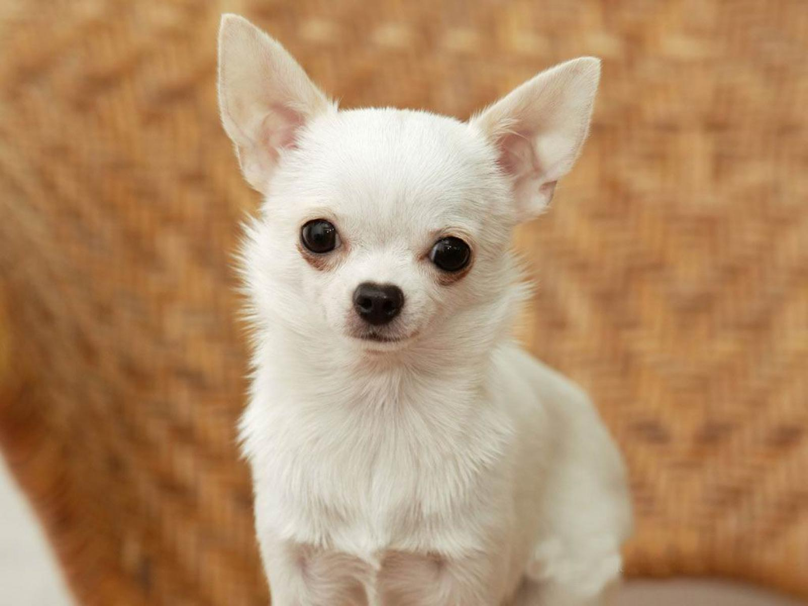

Чихуахуа
- Продолжительность жизни: 14-18 лет
- Группа: Комнатно-декоративная
- Окрас шерсти: однотонный или с отметинами
- Длина шерсти: длинная или короткая
- Линька: умеренная.
- Рост кобеля: 15-23 см
Чихуахуа является единственной комнатно-декоративной породой собак, предки которой также отличались маленьким размером.
Практически все остальные породы выводились от собак среднего размера.
Собаки чихуахуа отличаются чрезвычайным умом, подвижностью и очарованием. Они будут преданы своему хозяину,
если будут получать от него достаточно любви и верности в ответ.
Творческая натура этой собаки заставляет ее привлекать внимание хозяина всевозможными способами, которые то и дело меняются.
Рядом с чужими людьми эта собака будет вести себя подозрительно, не спуская глаз с незнакомца. Своей бдительностью,
внимательностью, смелостью и дерзостью чихуахуа напоминает терьера.
Некоторые собаки этой породы любят греться на солнце. Во избежание тепловых ударов нужно внимательно следить за этим.
Спать такая собака также любит в тепле рядом с хозяином. Мягкая натура чихуахуа делает его прекрасным питомцем.
Чрезмерная самоуверенность и чувствительность часто становятся причиной слишком беспокойного поведения чихуахуа.
Эти собаки не любят одиночество, их нельзя надолго оставлять дома одних.
